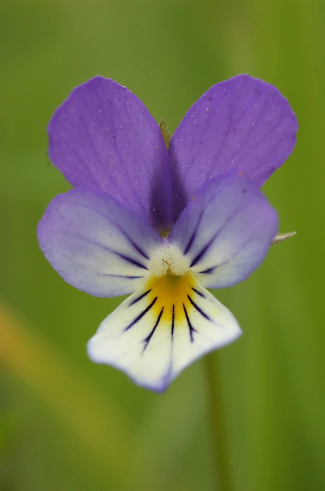

花卉与草本 · 植物界
三色堇 Viola tricolor

堇菜科一二年生草本，单朵花常具紫、黄、白三色，花形如蝴蝶，是早春花坛和花境常用的美化材料之一。
- 分类
- 门被子植物门纲木兰纲目金虎尾目科堇菜科属堇菜属
- 栖息环境
- 欧洲草甸、田埂与林缘，喜凉爽、阳光充足的环境
- 地理分布
- 原产欧洲，现世界各地广泛栽培，中国各地花坛常见
- 保护级别
- 暂无评估
物种志
三色堇为堇菜科堇菜属一二年生草本，株高 15–30 厘米，茎多分枝，稍匍匐。叶互生，卵形或长圆形，边缘有圆齿，托叶羽状深裂。花单生于叶腋，直径 2–4 厘米，通常有紫、黄、白三色，上面两枚花瓣常为紫色，下面花瓣黄色并带紫色斑纹，花期 4–6 月，果期 5–7 月。
三色堇原产欧洲，野生种是欧洲草甸常见的三色堇菜，19 世纪起英国、比利时园艺家以它为主体杂交选育，形成了花径更大、色彩更丰富的栽培品种。它喜凉爽湿润和充足阳光，耐寒不耐热，夏季高温时易萎蔫；播种以秋播为主，翌年早春开花。花朵可作沙拉和甜点的装饰，但需确认未施农药；在欧洲，三色堇的花语常与思念和快乐相连。
形态与习性
- 株高15–30 厘米，茎多分枝
- 花期4–6 月，凉爽地区可延至 7 月
- 果期5–7 月，蒴果三瓣开裂
- 光照喜光，也耐轻度半阴
- 水分喜湿润，忌干旱和水涝
- 土壤疏松肥沃、排水良好的壤土
- 繁殖以秋播为主，也可扦插
- 主要用途花坛、花境、盆花与食用装饰
趣味知识
- 三色堇的花瓣通常呈现紫、黄、白三色，因此得名，图案又似一张猫脸。
- 园艺上常见的三色堇多为杂交选育品种，花径可比野生种大数倍。
- 三色堇播种后需经低温春化，翌年早春才能整齐开花。
- 花朵可点缀沙拉与甜点，但食用前须确认栽培中未使用农药。